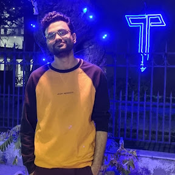

Pramit Bhattacharyya / প্রমিত ভট্টাচার্য্য
Assistant Professor
Department of Computer Science and Information Systems
BITS Pilani, Hyderabad Campus

About
I am an Assistant Professor at BITS Pilani, Hyderabad campus, where I lead the Bhāṣābōdha lab, which focuses on understanding Indian languages. Prior to this, I was a FARE Fellow at IIT Kanpur, where I obtained my PhD in the Department of Computer Science under the supervision of Dr Arnab Bhattacharya. I obtained my M.Tech from IIIT Delhi and my B.Tech from Heritage Institute of Technology, Kolkata.
My research lies at the intersection of natural language processing and computational linguistics, with a focus on low-resource Indian languages, particularly Bangla. I work on building datasets, models, benchmarks, and evaluation frameworks grounded in linguistic structure, and am also interested in the use of AI in the healthcare domain. My broader research interests include multilingualism, speech processing, multimodal models, and mechanistic interpretability.
পরিচিতি
প্রমিত বর্তমানে BITS Pilani হায়দরাবাদ সহকারী অধ্যাপক হিসেবে কর্মরত এবং সেখানে তিনি 'ভাষাবোধ' গবেষণা ল্যাবটি পরিচালনা করেন। তার পূর্বে তিনি IIT কানপুরের কম্পিউটার সায়েন্স অ্যান্ড ইঞ্জিনিয়ারিং বিভাগে একজন FARE ফেলো হিসেবে কর্মরত ছিলেন । তিনি IIT কানপুরের কম্পিউটার সায়েন্স অ্যান্ড ইঞ্জিনিয়ারিং বিভাগ থেকে অধ্যাপক অর্ণব ভট্টাচার্যের তত্ত্বাবধানে তাঁর পিএইচডি সম্পন্ন করেছেন।
তাঁর গবেষণা মূলত ভাষা কার্য-প্রণালী (Natural Language Processing) এবং পরিগণনামূলক ভাষাবিজ্ঞান (Computational Linguistics) সংযোগস্থলে, বিশেষ করে কম-সম্পদযুক্ত ভাষা—যেমন বাংলা এবং অন্যান্য ভারতীয় ভাষার ওপর কেন্দ্র করে। তিনি ভাষাগত কাঠামোর ওপর ভিত্তি করে তথ্যসম্ভার, মডেল, মানদণ্ড এবং মূল্যায়ন কাঠামো তৈরির প্রচেষ্টা করেন। এছাড়া, স্বাস্থ্যসেবা খাতে কৃত্রিম বুদ্ধিমত্তার প্রয়োগ নিয়ে গবেষণা করতেও তিনি আগ্রহী। তাঁর গবেষণার কেন্দ্রস্থলে রয়েছে বহুভাষিকতা (multilingualism), স্বয়ংক্রিয় বাক্-শনাক্তকরণ (ASR), বহুমাত্রিক মডেল (multi-modal) এবং কার্যপ্রণালীভিত্তিক ব্যাখ্যাযোগ্যতা (mechanistic interpretability)।
Research interests
My broader goal is to help democratize AI for Indian languages. Current areas of interest include:
News
- [September 2026] Started my career as an Assistant Professor at BITS Pilani Hyderabad Campus.
- [September 2026] Paper accepted at IROS 2026.
- [August 2026] BHASHA workshop will be co-located with ICON 2026.
Selected publications
-
Visually-Grounded Reward Synthesis: Training Fast Robot Policies with Slow Foundation Models.
Utsav Singh, Pramit Bhattacharyya, Vinay Namboodiri, Amrit Singh Bedi. IROS 2026. [PDF] -
BanglaByT5: Byte-Level Modelling for Bangla
Pramit Bhattacharyya, Arnab Bhattacharya. EMNLP (Findings), 2025. [PDF] [Model] -
Leveraging LLMs for Bangla Grammar Error Correction: Error Categorization, Synthetic Data, and Model Evaluation.
Pramit Bhattacharyya, Arnab Bhattacharya. ACL (Findings), 2025. [PDF] [Dataset] -
Vacaspati: A Diverse Corpus of Bangla Literature.
Pramit Bhattacharyya, Joydeep Mondal, Subhadip Maji, Arnab Bhattacharya.. AACL, 2023. [PDF] [Dataset] [Model]
Teaching
- Computational Thinking and Programming Lab [Semester I, 2026]
Bhāṣābōdha/ভাষাবোধ
Bhāṣābōdha/ভাষাবোধ lab website will be up soon.
Students and collaboration
I am looking for students interested in NLP, computational linguistics, and language technologies for Indian languages. Please email a short introduction and your research interests.
Contact
Department of Computer Science and Information Systems
BITS Pilani, Hyderabad Campus
Email: pramit.bhattacharya@hyderabad.bits-pilani.ac.in